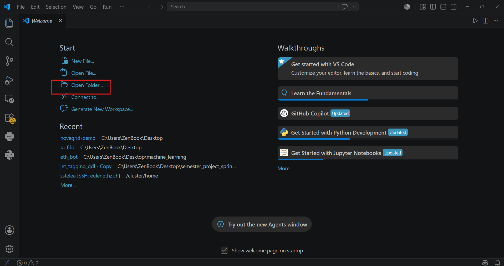
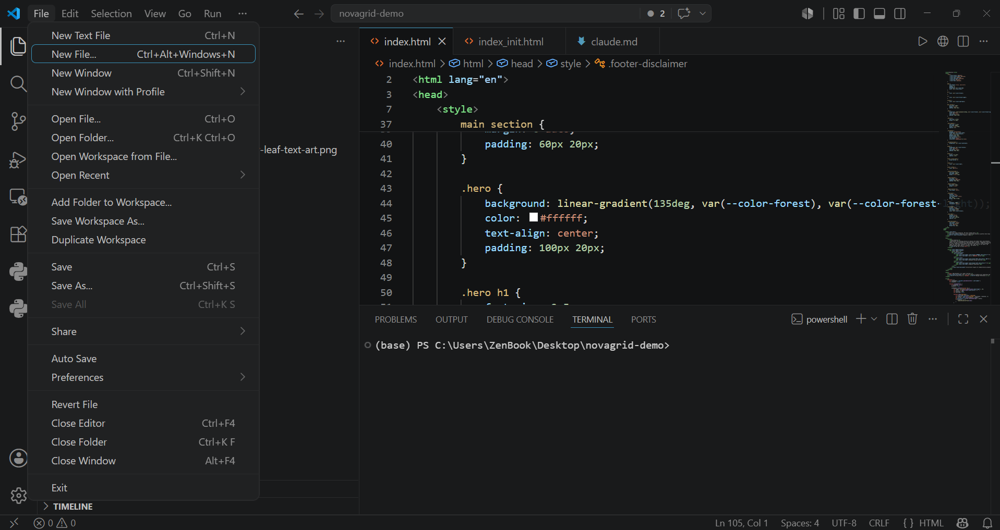
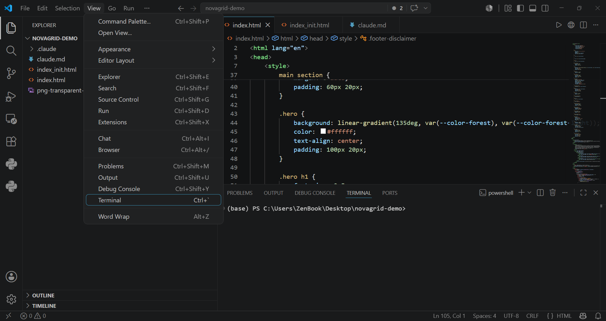

Weekend 1 · Setup
Installation Guide: VS Code + Claude Code
This guide has no prior assumptions. If you've never opened a terminal before, that's fine — every step is spelled out.
Before you start
- A laptop (Windows, Mac, or Linux) with an internet connection
- A Claude account with a paid plan: Pro, Max, Team, or Enterprise
How to obtain a Claude account? Sign up at claude.ai using your institutional account, in the format ETHusername@ethz.ch, because we have provided you with a Claude Pro licence. If you have any problems setting up your account, please send an email to fcaperna@ethz.ch.
ETHusername@ethz.ch (not a personal one!)There are two things we're installing:
- VS Code — the code editor (where you'll see and edit files)
- Claude Code — the AI coding assistant (runs in a terminal, and plugs into VS Code)
Part 1 — Install VS Code
Go to code.visualstudio.com/download. The page detects your operating system and shows you the right button — just click the big blue download button for your platform.
Windows
- Click the Windows download button (this gets the "User Installer" — the normal option, no admin rights needed).
- Open the downloaded
.exefile and run through the installer. - On the "Select Additional Tasks" screen, make sure "Add to PATH" is checked (it is by default). Leave everything else as-is and click Next → Install.
- Launch VS Code from the Start menu when it finishes.
macOS
- Click the Mac download button (choose "Apple Silicon" if you have an M-series Mac — 2020 or later — or "Intel chip" for an older Mac; if unsure, "Universal" works on both).
- Open the downloaded
.zip— it extracts toVisual Studio Code.app. - Drag
Visual Studio Code.appinto your Applications folder. - Open it from Applications (or Spotlight:
Cmd+Space, type "Visual Studio Code").
Linux
- On the download page, pick the package for your distribution:
.debfor Ubuntu/Debian,.rpmfor Fedora/RHEL, or install via Snap Store if you prefer. - For
.deb: double-click the file to open it in your software installer, or runsudo apt install ./<file>.debin a terminal. - For
.rpm:sudo dnf install ./<file>.rpm(Fedora) or your distro's equivalent.
Part 2 — Open a terminal
Claude Code is installed and run from a terminal. Here's how to open one:
| OS | How to open it |
|---|---|
| Windows | Click Start, type PowerShell, press Enter on Windows PowerShell |
| macOS | Press Cmd+Space, type Terminal, press Enter |
| Linux | Ctrl+Alt+T, or search "Terminal" in your app menu |
You'll see a blinking cursor waiting for a command. That's normal — it's just waiting for you to type something.
PS C:\Users\YourName> (starts with PS). If it just says C:\Users\YourName> with no PS, you're in the older Command Prompt instead — close it and open PowerShell as above.Part 3 — Install Claude Code
Copy the command for your OS, paste it into the terminal you just opened, and press Enter.
Ctrl+Shift+V. Mac — Cmd+V.Windows (PowerShell)
irm https://claude.ai/install.ps1 | iexmacOS
curl -fsSL https://claude.ai/install.sh | bashLinux
curl -fsSL https://claude.ai/install.sh | bashThis downloads and installs Claude Code, and updates itself automatically in the background from now on — nothing more to do after this.
Verify it worked
In the same terminal, type:
claude --versionIf you see a version number (e.g. 2.1.89), it worked. If you get an error like command not found or 'claude' is not recognized, close the terminal window completely and open a new one (this refreshes the terminal's knowledge of newly installed programs), then try again.
Part 4 — Sign in
Still in the terminal, type:
claudeand press Enter. This launches Claude Code and opens your browser to log in. Sign in with the same Claude account you use at claude.ai (must be Pro, Max, Team, or Enterprise — see Before you start). Once you approve access in the browser, come back to the terminal — you should see a Claude Code welcome screen.
Type exit (or press Ctrl+C twice) to leave for now.
Part 5 — Connect Claude Code to VS Code
This is the easiest part — it happens automatically.
-
Open VS Code.
-
Open a folder. From the Welcome tab, click Open Folder... under "Start" (or use File → Open Folder... from the menu bar), then pick or create a project folder to work in.

-
Create a file in that folder. Use File → New File... (or the shortcut shown in the menu) and save it into the folder you just opened.

-
Open the built-in terminal: View → Terminal in the menu bar (or the shortcut
Ctrl+`on Windows/Linux,Cmd+`on Mac).
Screenshot shown is from Windows — on macOS/Linux the menu is in the same place, just with different keyboard shortcuts. -
In that terminal (inside VS Code), type
claudeand press Enter.
The first time you do this, VS Code automatically installs the Claude Code extension, which gives you a nice chat panel alongside your files, inline diffs when Claude edits code, and more. Look for the ✱ spark icon in the top-right corner of any open file, or in the left sidebar — click it to open the Claude panel.
That's it — you're set up.
Quick checklist
- VS Code installed and opens
- Terminal opens (PowerShell / Terminal)
claude --versionshows a version numberclaudelaunches and you're signed in- Spark icon (✱) visible in VS Code
Troubleshooting
irmis not recognized- You're in Command Prompt, not PowerShell. Close it and reopen via Start menu → search "PowerShell".
'claude' is not recognized/command not found, even after installing- Close all terminal and VS Code windows and reopen them. The install adds
claudeto your system PATH, but only newly-opened windows pick that up. - Nothing happens when I paste the install command
- Make sure you pressed Enter after pasting — pasting alone doesn't run it.
- Browser doesn't open for sign-in
- Copy the URL printed in the terminal and paste it into your browser manually.
- Still stuck
- Ask your instructor, or see the official docs at code.claude.com/docs and code.visualstudio.com/docs.